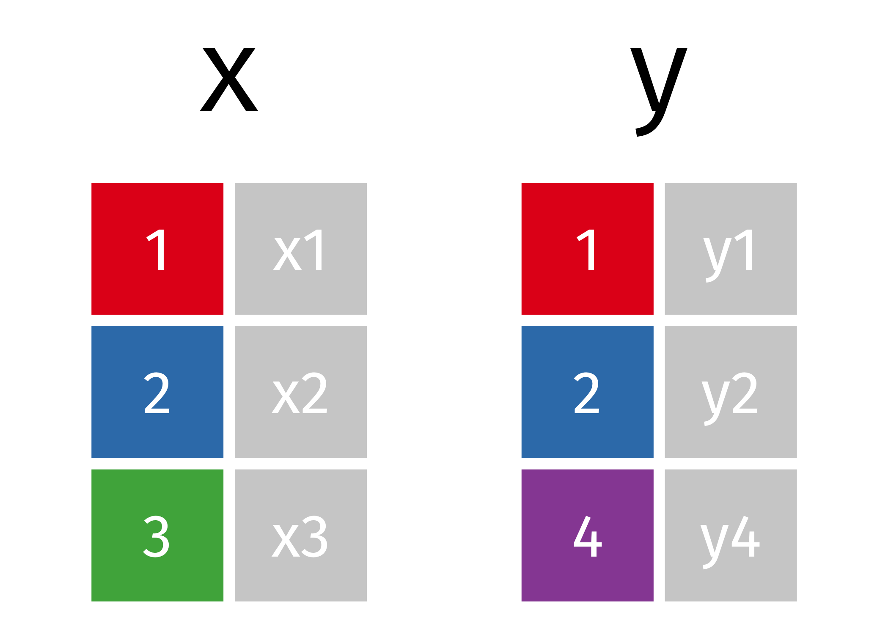

Review the homework from Session 5.
You can check out the approach I took in this page. There is more than one way to accomplish each task, so it’s okay if your code looks different!
Columns represent separate variables
Rows represent individual observations
Observational units form tables
What are the two types of keys?
Answer
A primary key uniquely identifies an observation in its own table. For example, patients$id is a primary key because it uniquely identifies each patient in the patients table.
encounters$patient_id is a foreign key because it appears in the patients table where it matches each encounter to a unique patient.What is/are the primary key(s) in the babynames data set?
Output
# A tibble: 10 x 5
year sex name n prop
<dbl> <chr> <chr> <int> <dbl>
1 2011 F Yasemin 14 0.00000724
2 2012 F Madelon 6 0.00000310
3 1956 F Julann 6 0.00000291
4 2006 M Domonique 20 0.00000913
5 1994 M Washington 9 0.00000442
6 1985 F Letha 24 0.0000130
7 2001 F Gala 16 0.00000808
8 1927 M Roosevelt 484 0.000417
9 1995 M Samar 6 0.00000298
10 1999 F Shaelee 16 0.00000822I highly encourage you to read the chapter on Relational Data in the R4DS book.
You can also review all of the join animations by visiting my page on tidy animated verbs.

Mutating Joins
inner_join()left_join()right_join()full_join()Filtering Joins
semi_join()anti_join()Tidying Data
Group work: Joins and Tidying
Working with dates and times
What are the variables in this table and how would you transform it into tidy format?